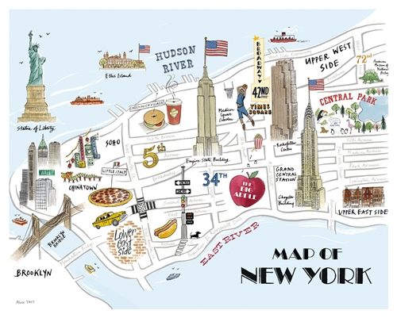

NewYork city
New York is a state in the Northeastern United States. New York was one of the original Thirteen Colonies that formed the United States. With an estimated 19.85 million residents in 2017, it is the fourth most populous state. To distinguish the state from the city in the state with the same name, it is sometimes called New York State.
New York covers 54,555 square miles (141,300 km2) and ranks as the 27th largest state by size. The highest elevation in New York is Mount Marcy in the Adirondacks, at 5,344 feet (1,629 meters) above sea level; while the state's lowest point is at sea level, on the Atlantic Ocean.
In contrast with New York City's urban landscape, the vast majority of the state's geographic area is dominated by meadows, forests, rivers, farms, mountains, and lakes. Most of the southern part of the state rests on the Allegheny Plateau, which extends from the southeastern United States to the Catskill Mountains; the section in New York State is known as the Southern Tier. The rugged Adirondack Mountains, with vast tracts of wilderness, lie west of the Lake Champlain Valley. The Great Appalachian Valley dominates eastern New York and contains the Lake Champlain Valley as its northern half and the Hudson Valley as its southern half within the state. The Tug Hill region arises as a cuesta east of Lake Ontario.

Upstate and downstate are often used informally to distinguish New York City or its greater metropolitan area from the rest of New York State. The placement of a boundary between the two is a matter of great contention. Unofficial and loosely defined regions of Upstate New York include the Southern Tier, which often includes the counties along the border with Pennsylvania, and the North Country, which can mean anything from the strip along the Canada–US border to everything north of the Mohawk River.